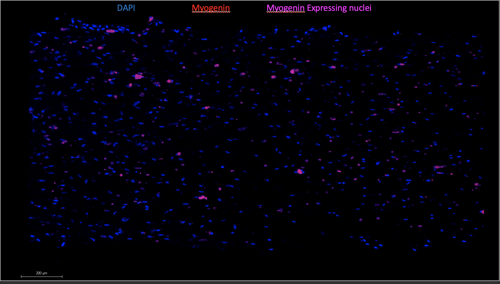
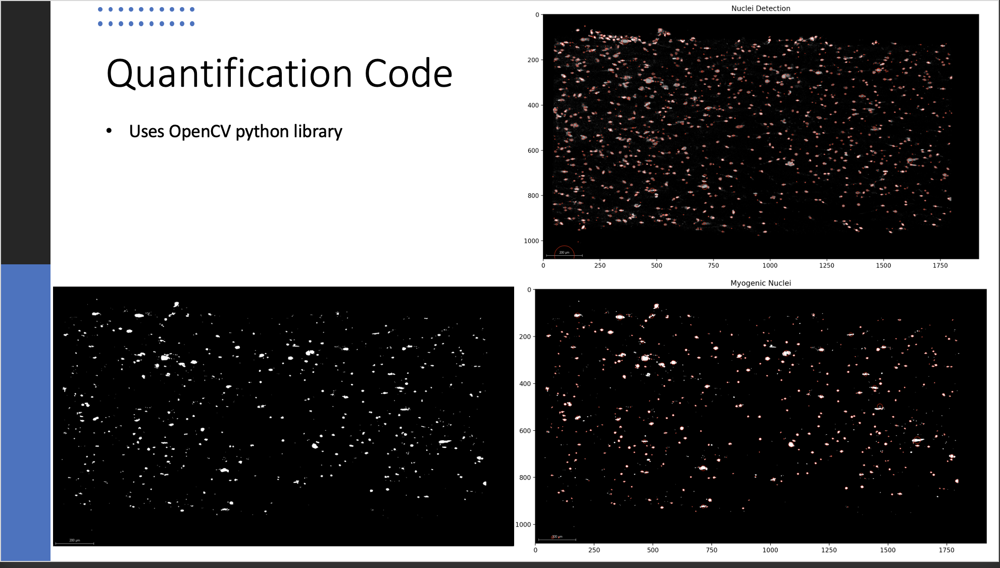

During the summer of 2022, I had the pleasure of participating in a REU at the University of Texas San Antonio under the Biomedical Engineering Research for Active military and Veterans (BRAVe) program. Under the guidance of Dr. Settimio Pacelli and Dr. Christopher Rathbone, I worked on researching diabetic skeletal muscle during my time there. The overall goal of my research was determine if an increase in the protein of a protien SIRT-1 would increase myogenic and angiogenic factors in diabetic muscle cells.
As part of this research, I was tasked with counting the amount of nuclei stained with a fluorescent marker to show the presence of myogenesis in about 20 images. Unfortunately each of these images contained thousands of nuclei that I would have to count by hand. Instead, I took the initiative to create my own python program to complete this for me.
A python based program using the OpenCV library capable of counting nuclei in a reproducible manner.
To begin writing my program, I knew I needed some method of object detection to determine what was a nuclei and what wasn't. After some research, I stumbled upon OpenCV, an open source python library for image detection and analysis, and began working.
Each image that was analyzed looked similar to this: 
After using OpenCV's blob detection on these images, I found myself having little success. I was also struggling to find a way to count both the myogenic nuclei (purple) and the total nuclei in the picture. To solve this issue, I decided to split the image into two different color channels of red/ blue. I then made a purple channel by creating a new image of where these two channels overlapped. Now that I had a blue and purple to analyze, I greyscaled the images so that the blob detection can perform more accuratley. Re-running my results I was able to determine the precent of nuclei that were myogenically activated with consistent results.
Sample output from Python Nuclei Detector based on images above:
$ Nuclei: 1252
$ Myogenic Nuclei: 413
$ Percent of overlap: 32.98722044728434| Skills Demonstrated | Project Artifacts |
|---|---|
| R Statistics | Github Repo |
Although these results weren't perfect, I was able to produce a reproducible method of detecting nuclei within a two day timeframe. This program saved me tedious hours of counting thousands of nuclei by hand.